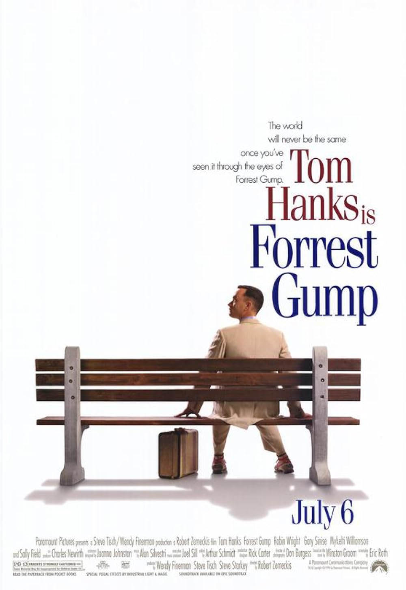
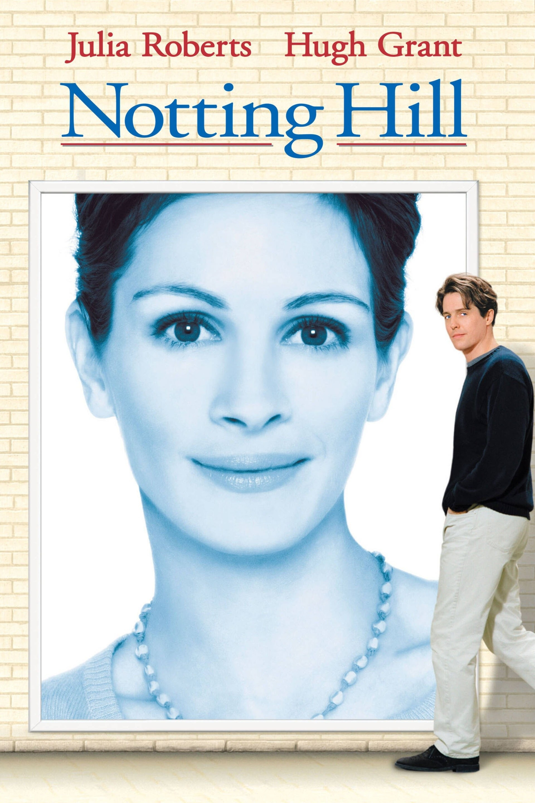

The Best Movies According To Kukkiie
My Top 3 Movies of all-time:
Forrest Gump

- This is an old movie that I really like.
- And I have watched many times.
- Tom Hanks is a great actor.
Saving Private Ryan

- This movie made me cried so hard.
- And again, Tom Hanks is a great actor.
Notting Hill

- I love the old scenes in England back then.
- And most of all scenes take placed in a bookstore that I really like.